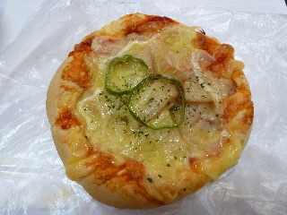
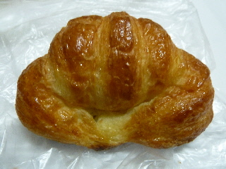
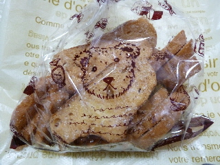
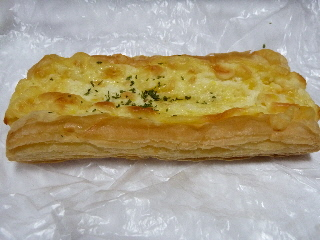
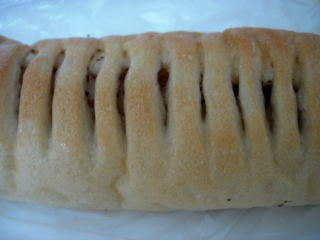
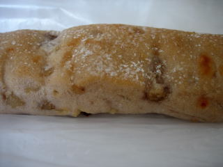
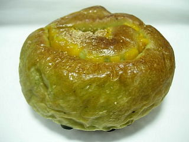
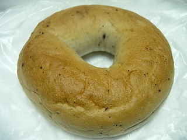

ピノキオのピザパンはずっしりしていました。
更新日 : 2014/04/07
ちょっと大き目な、パン屋さんのピザです。

チーズが沢山乗ってて分かりにくいですが、チーズの下にはハムが多めに入っています。
具沢山で美味しいピザでした。ピザはこれくらい具が乗ってないとね！って思いました。
島根県雲南市三刀屋町三刀屋120-1
更新日 : 2014/04/07
ちょっと大き目な、パン屋さんのピザです。

チーズが沢山乗ってて分かりにくいですが、チーズの下にはハムが多めに入っています。
具沢山で美味しいピザでした。ピザはこれくらい具が乗ってないとね！って思いました。
更新日 : 2014/03/29
綺麗な焼き色のクロワッサンですね。

柔らかいパン系のクロワッサンなので、ポロポロしなくて食べやすかったです。
ほんのりとした甘さと、クロワッサンらしいバターの感じがしました。
更新日 : 2013/05/18
ラスクの袋に絵が描いてあると、なんかプレゼントっぽくていいですね。

ちょっとしたコトですけど、見た目がとってもいいです。
コンガリ焼けていい色のラスクですね。砂糖たっぷりで甘かったです。
味は違いますが、なんとなくパンのみみを揚げて砂糖をまぶしたお菓子を思い出しました。美味しかったです。
更新日 : 2013/05/15
パイ生地の上に濃い味のチーズが乗ったパンです。

チーズだけじゃなくて、コーンもありました。
チーズたっぷりです。チーズ好きにはたまらないかも？
更新日 : 2010/06/11
長細いベーコンフランスです。

ベーコンと胡椒味のフランスパンです。フランスパンが柔らかめなので、かじって食べ易かったです。ここのお店のパンは柔らかいパンが多いなと思いました。

こっちはチーズとクルミが入った細長いパンです。味も食感も良かったです。
更新日 : 2009/09/26
ふんわりしたパンに、カボチャのあんが入ってました。

カボチャの味が生きてて、美味しかったです。よもぎパン（？）とカボチャとの相性が良く、カボチャの味がより引き立ってました。

これはブルーベリーベーグルです。
ベーグルっていうとちょっと質量があって、もちもちしている感じがあるんですが、ここのはふんわりとしていました。でもちゃんと味はベーグルでした。
ブルーベーリを細かくしたものが全体に入っているんですが、食べた時にいい香りがしていいなと思いました。